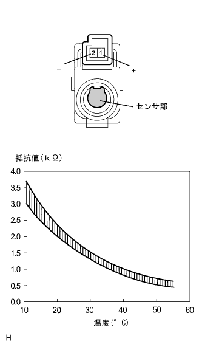

Cooler Thermistor (Room Temperature Sensor) Inspection |
| 1. Inspect Cooler Thermistor (Room Temperature Sensor) |
Inspect cooler thermistor (room temperature sensor)
 |
Using SST (Toyota electrical tester), measure the resistance between the connector terminals.
| Tester Connection (Terminal Symbol) | Condition | Standard |
|---|---|---|
| 1(+) - 2(-) | 10°C | 3.00 to 3.73kΩ |
| 15°C | 2.45 to 2.88kΩ | |
| 20°C | 1.95 to 2.30kΩ | |
| 25°C | 1.60 to 1.80kΩ | |
| 30°C | 1.28 to 1.47kΩ | |
| 35°C | 1.00 to 1.22kΩ | |
| 40°C | 0.80 to 1.00kΩ | |
| 45°C | 0.65 to 0.85kΩ | |
| 50°C | 0.50 to 0.70kΩ | |
| 55°C | 0.44 to 0.60kΩ | |
| 60°C | 0.36 to 0.50kΩ |